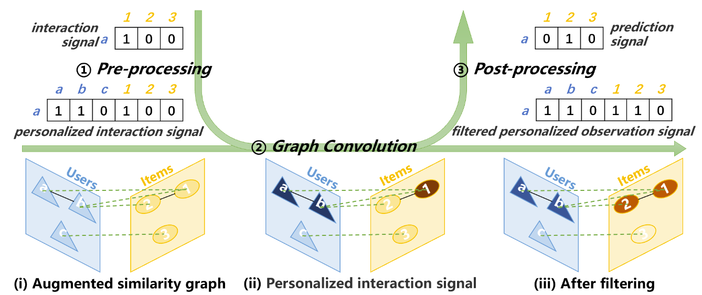

开源项目列表
-
Personalized Graph Signal Processing for Collaborative Filtering. WWW 2023.
Jiahao Liu, Dongsheng Li, Hansu Gu, Tun Lu, Peng Zhang, Li Shang and Ning Gu
代码链接 文章链接The collaborative filtering (CF) problem with only user-item interaction information can be solved by graph signal processing (GSP), which uses low-pass filters to smooth the observed interaction signals on the similarity graph to obtain the prediction signals. However, the interaction signal may not be sufficient to accurately characterize user interests and the low-pass filters may ignore the useful information contained in the high-frequency component of the observed signals, resulting in suboptimal accuracy. To this end, we propose a personalized graph signal processing (PGSP) method for collaborative filtering. Firstly, we design the personalized graph signal containing richer user information and construct an augmented similarity graph containing more graph topology information, to more effectively characterize user interests. Secondly, we devise a mixed-frequency graph filter to introduce useful information in the high-frequency components of the observed signals by combining an ideal low-pass filter that smooths signals globally and a linear low-pass filter that smooths signals locally. Finally, we combine the personalized graph signal, the augmented similarity graph and the mixed-frequency graph filter by proposing a pipeline consisting of three key steps: pre-processing, graph convolution and post-processing. Extensive experiments show that PGSP can achieve superior accuracy compared with state-of-the-art CF methods and, as a nonparametric method, PGSP has very high training efficiency.
 -
文章标题2
作者2
代码链接 文章链接文章详细信息